Pod-pocalypse is a couch party game set in the world of Jumbo and Pea-wee, two peas in a pod who face the imminent expiration of their world as they know it. Survive waves of cosmic food storms and stay on the ground as long as you can!
Role & Scope
Co-creative director and UI/UX designer & engineer, collaborating on initial concept, level design, and world-building. I was the sole developer for gameplay mechanics and systems, and technical artist for 3D environments, and UI.
The outcome of each game is shaped by how players work together, not by any single player carrying the group.
Progressive discovery.
The game reveals new possibilities through play, encouraging curiosity over optimization with each round.
Case Study
Character Select Screen
Problem
Lack of clear character identity
During gameplay, players had difficulty understanding what made each character distinct, making the game’s requirement to play different characters feel unclear rather than purposeful.
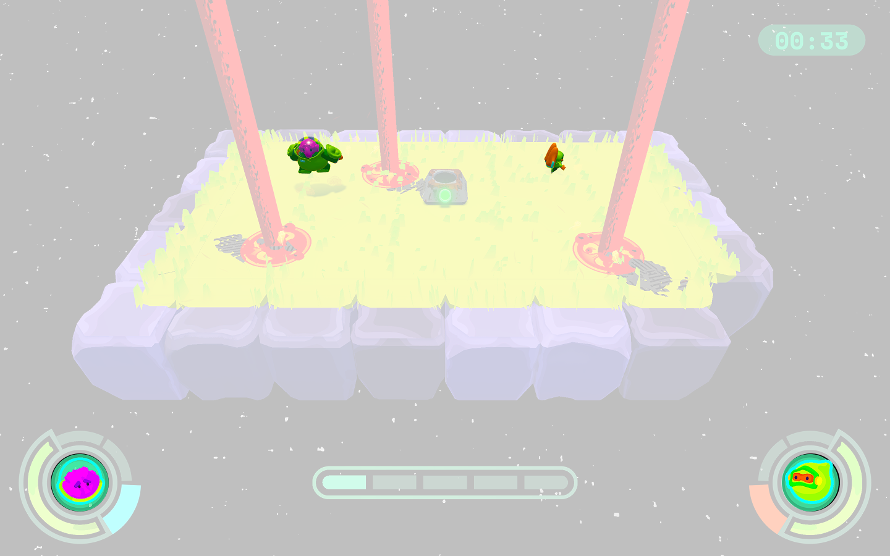
Without any prior context, some players couldn’t recognize their characters upon starting the gameplay.
Design Goal
Making Character Identity Legible at Selection
Introduce a character select interaction that helps players more clearly connect and inform their character choices without introducing complex stats or insinuate character-based "roles".
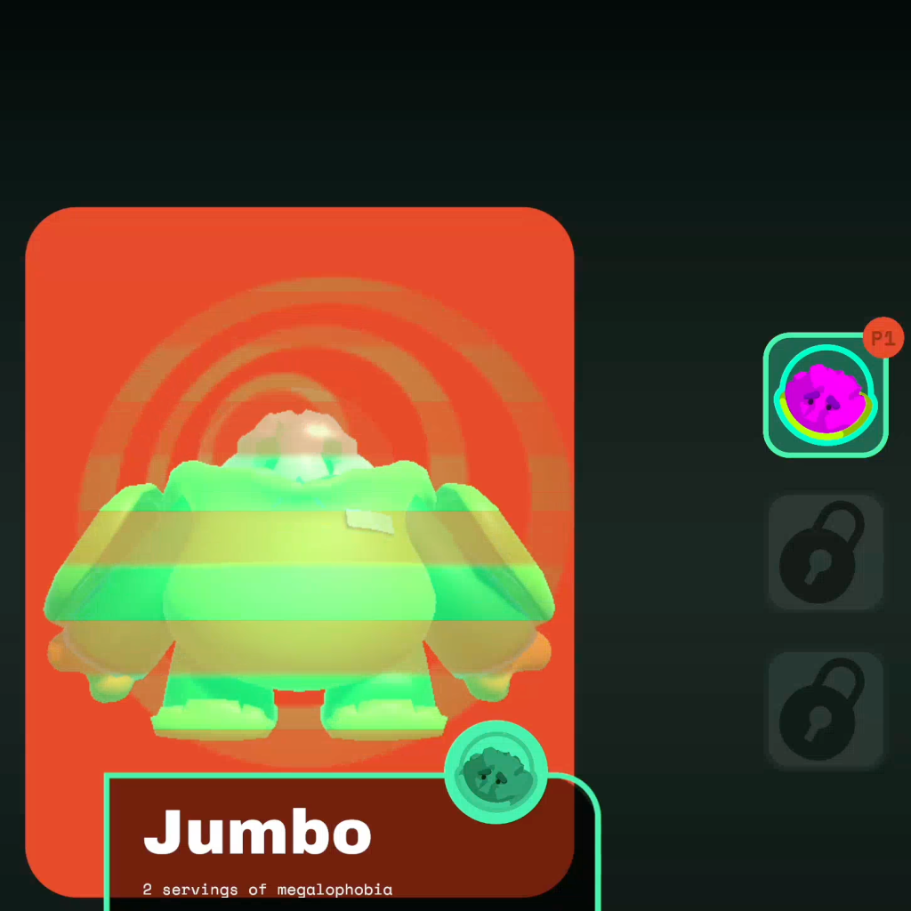
Load
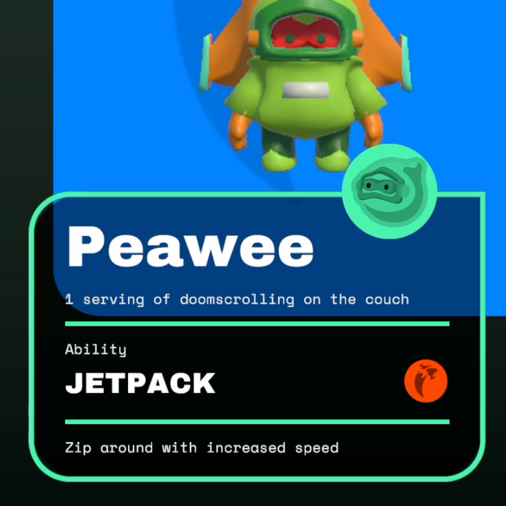
Learn
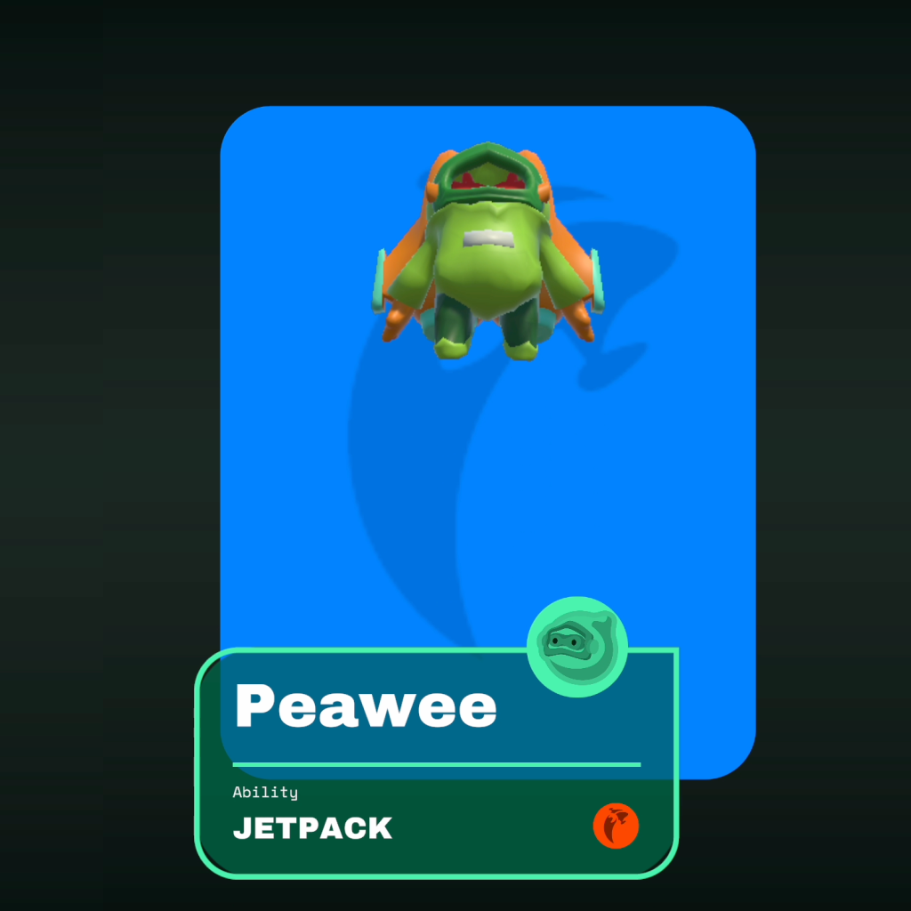
Lock
UX Flow
Individuality
“Nutrition info” panel for each character adds fun facts and iconography to specialize characters without introducing complex roles.
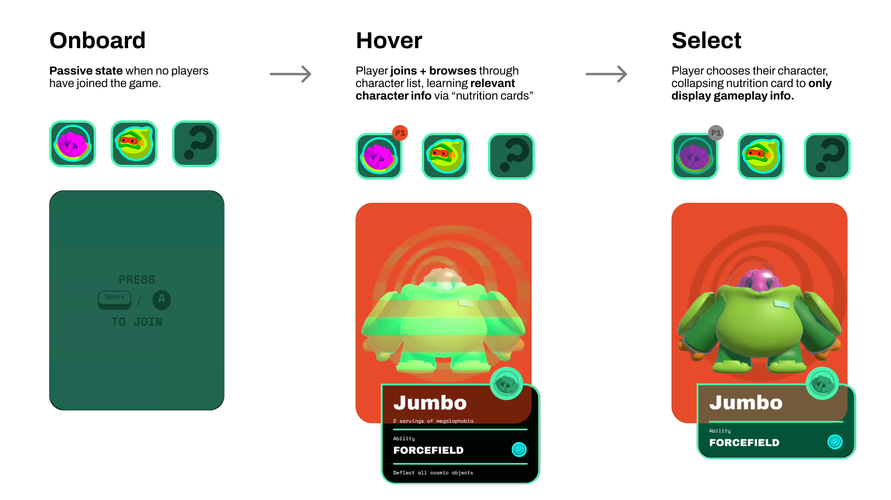
Randomizing character selection for players to try new characters and discover their unique traits.
UI Design/Motion
Playfullness
Interactive elements, icons, and motion design bring the character select to life, making the experience engaging and memorable.
Process
Translating Layout to Experience
This character select evolved through rapid iteration between layout, interaction, and motion. Early prototypes focused on clarity and character legibility, while later explorations refined hierarchy, feedback, and world-building to make each selection feel informative, responsive, and engaging in play.
Early layout focused on character visibility and restraint, but the evenly weighted information and single-panel structure resulted in a flat, low-engagement experience.
I then moved to the visuals and motion for more clarity and world-building. What if tinder met nutrition labels met holograms? This collage inspired a system that made switching characters more informative and satisfying.
Case Study
Pause and Ending Screen
Problem
Pause Removed Context When Players Needed It
Playtesting revealed that players consistently used pause as a moment to communicate and make sense of on-screen chaos, yet pausing removed the visual context they relied on to do so.
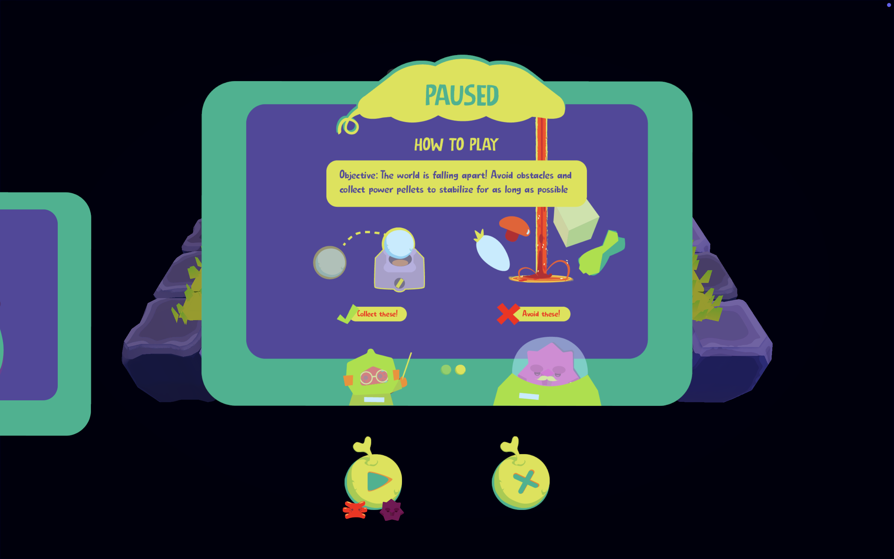
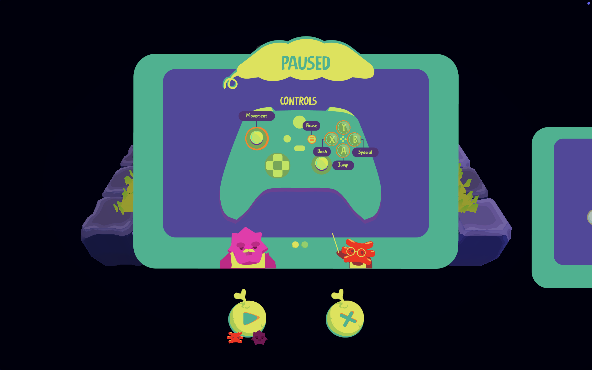
Our previous pause screen was prototyped to show all relevant information at the center of the screen.
Design Goal
Framing the Game State During Pause
Design a pause experience that keeps gameplay visible, allowing players to regroup and access information without breaking their connection to the action.
Feature 1
Highlighting the Action
The pause screen preserves negative space to keep gameplay in view, maintaining the scene while visually reflecting its paused state.
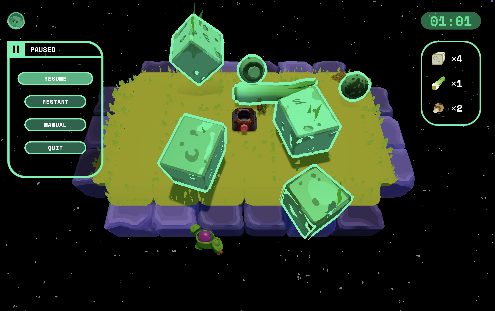
Feature 2
Designed for Quick Scanning
Information-dense panels expand to take focus only when players choose to engage with them, allowing clarity without overwhelming the ongoing play space.
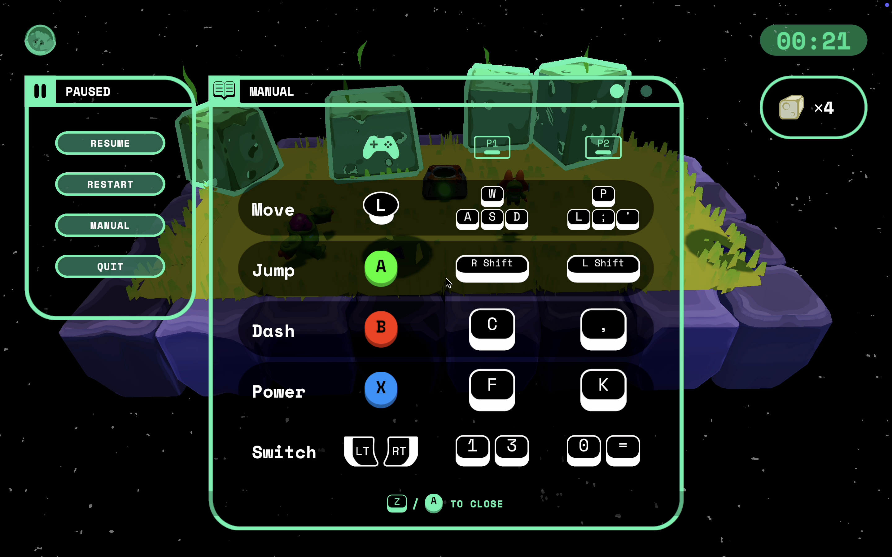
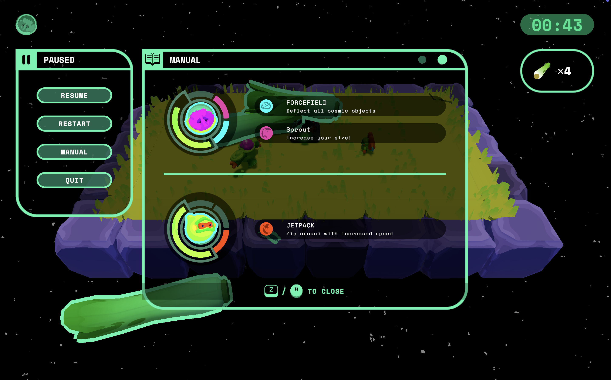
Feature 3
Reflecting the World Back to the Player
The pause screen passively responds to the live game state, surfacing counts of on-screen obstacles so it feels like an extension of the world rather than a static overlay.
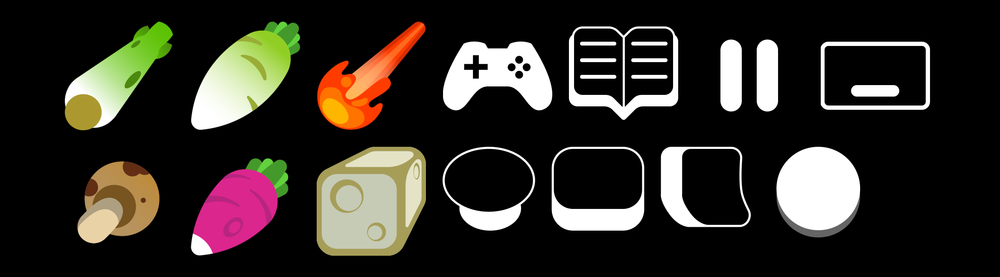
Process
Starting With Player Intent
The pause screen was shaped by a simple question: what do players need first when they pause? Every layout decision flowed from that lens, helping us focus attention without overwhelming the moment.
Feature 4
Grounding the Ending in the Game World
Building on the pause screen’s live feedback, the ending screen reflects the final state of play—presenting key information clearly while the world resolves behind it.